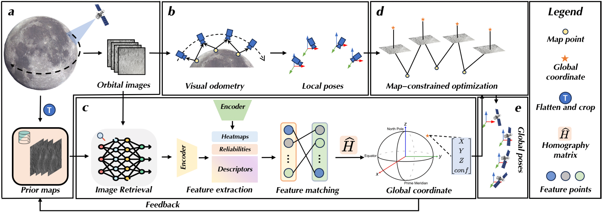

|
| CV |
Email |
Google Scholar |
|
I am a second-year graduate student at University of Chinese Academy of Sciences, advised by Prof. Wan. I received my Bachelor's degree in computer science at Shanghai University of Finance and Economics, advised by Dr. Kwok. My research area includes visual localization, robotics vision and vision-language navigation. Email: luoxuob23 [AT] mails.ucas.ac.cn |
{kind=link}
|  |
pdf |
abstract |
arXiv (Under review) |
Spacecraft autonomous localization is a fundamental capability for space missions, including rover planetary surface exploration, satellite on-orbit servicing and lander precision landing tasks. While conventional approaches predominantly depend on ground-based observatories, their lack of autonomy and scalability limits their applications in deep-space exploration tasks. This paper presents Deep Visual Feature-Driven Map-Assisted Localization (DVD-MapAL), a novel method that combines visual odometry with prior map constraints to establish a self-contained localization system. The proposed architecture introduces two key innovations: (1) a coordinate-constrained pose optimization module that dynamically corrects cumulative errors in visual odometry through geometric consistency verification, and (2) a frequency-domain enhanced feature descriptor enabling robust projection estimation between orbital imagery and pre-existing maps. To encourage and inspire future research in this field, we release a comprehensive simulation dataset containing 11,721 photorealistic images with six-degree-of-freedom annotations, generated through Unreal Engine and AirSim platforms. Experimental evaluations demonstrate DVD-MapAL's superior performance, achieving 23.64\% lower mean positional error than ORB-SLAM3 in spacecraft scenarios. Further validation on the Chang'e lunar probe dataset reveals 17.89\% improvement over conventional visual localization methods, particularly in feature-deprived extraterrestrial environments. The open-source implementation and benchmark dataset will be made publicly available. |

|
pdf |
abstract |
bibtex |
arXiv |
code
Unmanned aerial vehicles (UAVs) visual localization in planetary aims to estimate the absolute pose of the UAV in the world coordinate system through satellite maps and images captured by on-board cameras. However, since planetary scenes often lack significant landmarks and there are modal differences between satellite maps and UAV images, the accuracy and real-time performance of UAV positioning will be reduced. In order to accurately determine the position of the UAV in a planetary scene in the absence of the global navigation satellite system (GNSS), this paper proposes JointLoc, which estimates the real-time UAV position in the world coordinate system by adaptively fusing the absolute 2-degree-of-freedom (2-DoF) pose and the relative 6-degree-of-freedom (6-DoF) pose. Extensive comparative experiments were conducted on a proposed planetary UAV image cross-modal localization dataset, which contains three types of typical Martian topography generated via a simulation engine as well as real Martian UAV images from the Ingenuity helicopter. JointLoc achieved a root-mean-square error of 0.237m in the trajectories of up to 1,000m, compared to 0.594m and 0.557m for ORB-SLAM2 and ORB-SLAM3 respectively. The source code will be available at this https URL.
@misc{luo2024jointloc,
title={JointLoc: A Real-time Visual Localization Framework for Planetary UAVs Based on Joint Relative and Absolute Pose Estimation},
author={Xubo Luo and Xue Wan and Yixing Gao and Yaolin Tian and Wei Zhang and Leizheng Shu},
year={2024},
eprint={2405.07429},
archivePrefix={arXiv},
primaryClass={cs.RO}
}
|

|
pdf |
abstract |
bibtex |
arXiv |
code
Infrared and visible image fusion is an extensively investigated problem in infrared image processing, aiming to extract useful information from source images. However, the automatic fusion of these images presents a significant challenge due to the large domain difference and ambiguous boundaries. In this article, we propose a novel image fusion approach based on hybrid boundary-aware attention, termed HBANet, which models global dependencies across the image and leverages boundary-wise prior knowledge to supplement local details. Specifically, we design a novel mixed boundary-aware attention module that is capable of leveraging spatial information to the fullest extent and integrating long dependencies across different domains. To preserve the integrity of texture and structural information, we introduced a sophisticated loss function that comprises structure, intensity, and variation losses. Our method has been demonstrated to outperform state-of-the-art methods in terms of both visual and quantitative metrics, in our experiments on public datasets. Furthermore, our approach also exhibits great generalization capability, achieving satisfactory results in CT and MRI image fusion tasks.
@article{LUO2024104161,
title = {HBANet: A hybrid boundary-aware attention network for infrared and visible image fusion},
journal = {Computer Vision and Image Understanding},
volume = {249},
pages = {104161},
year = {2024},
issn = {1077-3142},
doi = {https://doi.org/10.1016/j.cviu.2024.104161},
url = {https://www.sciencedirect.com/science/article/pii/S107731422400242X},
author = {Xubo Luo and Jinshuo Zhang and Liping Wang and Dongmei Niu}
}
|

|
pdf |
abstract |
bibtex |
arXiv |
code
Unmanned Aerial Vehicles (UAVs) geo-localization refers to finding the position of a given aerial image in a large reference satellite image. Due to the large scale and illumination difference between aerial and satellite images, it is challenging that most existing cross-view image matching algorithms fail to localize the UAV images robustly and accurately. To solve the above problem, a novel UAV localization framework containing three-stage coarse-to-fine image matching is proposed. In the first stage, the satellite image is cropped into several local reference images to be matched with the aerial image. Then, ten candidate local images are selected from all of the local reference images with a simple and effective deep learning network, LPN. At last, a deep feature-based matching is employed between candidate local reference images and aerial images to determine the optimal position of the UAV in the reference map via homography transformation. In addition, a satellite-UAV image dataset is proposed, which contains 3 large-scale satellite images and 1909 aerial images. To demonstrate the performance of the proposed method, experiments on the large-scale proposed dataset are conducted. The experimental results illustrate that for more than 80% of the testing pair images, the proposed method is capable of refining the positioning error within 5 pixels, which meets the needs of UAV localization and is superior to other popular methods.
@INPROCEEDINGS{10137193,
author={Luo, Xubo and Tian, Yaolin and Wan, Xue and Xu, Jingzhong and Ke, Tao},
booktitle={2022 International Conference on Service Robotics (ICoSR)},
title={Deep learning based cross-view image matching for UAV geo-localization},
year={2022},
volume={},
number={},
pages={102-106},
keywords={Location awareness;Deep learning;Satellites;Service robots;Image matching;Refining;Lighting;deep learning;image matching;geo-localization;autonomous drone navigation},
doi={10.1109/ICoSR57188.2022.00028}}
|
|
IEEE Robotics and Automation Letters (RA-L) 2023
IEEE Transactions on Circuits and Systems for Video Technology (TCSVT) 2024 IEEE/SICE International Symposium on System Integrations (SII) 2024 |
|
|
Website template from here |